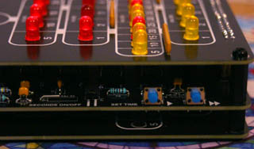
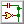
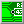
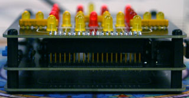

In the 70's and 80's, miniature desktop versions of the clock were sold by Binninger's company. Due to being out of production for decades, these original replicas have unfortunately become rare collectibles, selling for over $100 online.
Binninger even planned to make a wristwatch-sized version of the clock, but the price of creating the custom miniaturized components that would've been required in the 1970's made this impossible.
It should be possible to obtain the components necessary to construct this replica for approximately $40-50. If you plan on buying components in bulk and selling the clock as a kit (I don't impose any restrictions on anyone who wants to do this - you are free to sell any of the circuits I've designed!), the price per unit could probably be reduced to around $25-30.
The Berlin-Uhr is believed to be the key to solving Kryptos, a codebreaking puzzle that has baffled the CIA and NSA since 1990!
The logic and display PCBs connect to each other via a 40-pin header. A pin socket is mounted on the underside of the display, and a pin header (which should be decently tall) is mounted on the top of the logic PCB. A spare display PCB can be used to cover up the back of the logic board.
The PCB layers that make up the clock can be mounted on each other using M3 screws and standoffs.
A simple circuit is used for setting the time, similar to many digital clocks of the 70's and 80's. Holding down either of the buttons on the side of the clock reduces the number of clock divider stages before the 1-second signal, causing the clock to run faster. The "fast set" button is used to roughly set the time, and the "slow set" button is used to slowly count up to the correct time.
The limitation of this circuit is that the time can't be adjusted backwards, so you'll have to make sure not to overstep the correct time.
The clock displays 24-hour time. From top to bottom, the light zones are read as follows:
The display PCB has numbers printed under each LED so that the clock is easier to read.
The brightness of the LEDs is determined by the three resistor packs on the display PCB. I recommend 2KΩ packs, but if you plan on placing the clock in a well-lit environment, you may want to use 1KΩ packs instead. Resistor packs lower than 1KΩ are not recommended, as the LEDs are driven directly by CMOS logic outputs.
Bill of Materials - Display (Interactive)
HTML document, 302 KB - A list of all the
components you'll need to build the display PCB.

Logic Schematic
PDF document, 507 KB
Display Schematic
PDF document, 173 KB

Logic PCB Gerbers
ZIP archive, 394 KB

Display PCB Gerbers
ZIP archive, 175 KB
Logic PCB KiCad Files
ZIP archive, 922 KB - Useful if you want
to make modifications to the logic PCB. Made with KiCad 9.
Display PCB KiCad Files
ZIP archive, 575 KB - Useful if you want
to make modifications to the display PCB. Made with KiCad 9.
Custom Fonts
ZIP archive, 141 KB - Custom fonts used for
the KiCad files. Only needed if you want to modify these files.
Last updated on Aug 11, 2025.
This page was first uploaded on Aug 10, 2025.
{kind=link}
{kind=link}
{kind=link}